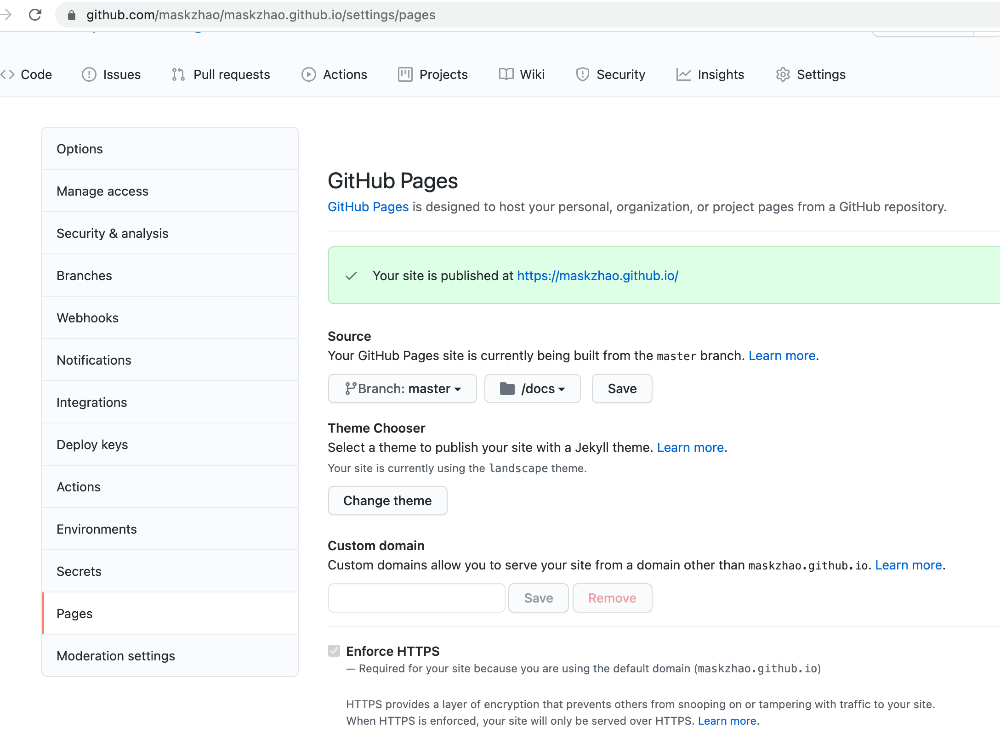
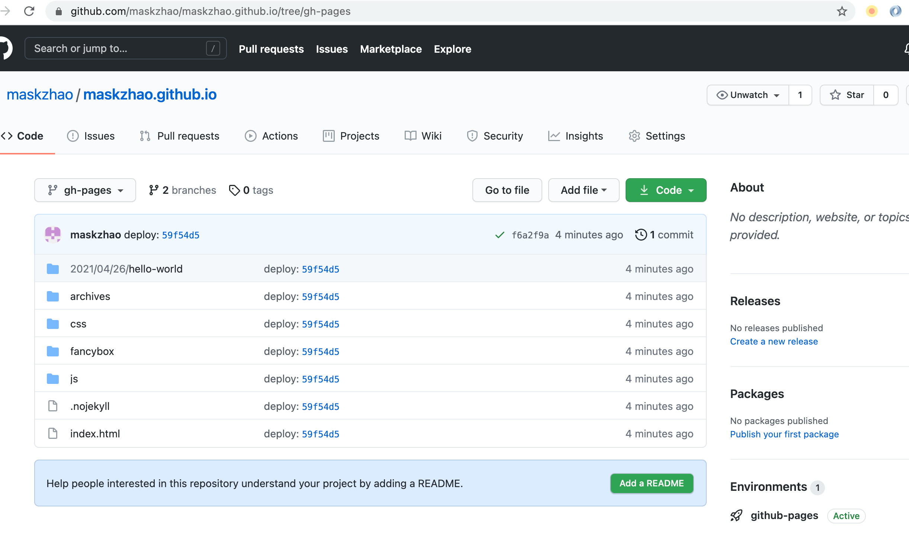
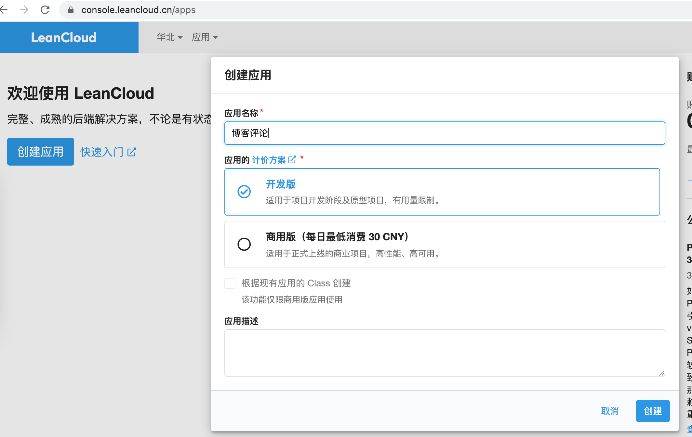

Hexo创建博客托管GitHub Pages完全指南
本文介绍基于Hexo创建博客，托管到GitHub Pages。
主要功能有：
- 用Hexo创建博客
- 使用GitHub Pages托管博客
- 使用GitHub Actions自动部署博客
- 为Hexo博客配置自适应主题fluid
- 为Hexo博客配置无后端评论插件valine
- 为Hexo博客添加百度统计
- 为Hexo博客添加Google Analytics
用Hexo创建并使用GitHub Pages托管博客
安装Hexo
Hexo基于Nodejs的博客框架，支持Markdown作为源文件，生成静态网页。
- 安装git：前往git官网下载对应操作系统版本完成安装。
- 安装Nodejs： 前往Nodejs官网下载对应操作系统版本完成安装。
- 安装Hexo：命令行执行
npm install -g hexo-cli如提示权限问题可以在命令前添加sudo。
创建博客项目文件
Hexo安装完成后，命令行进入到要保存项目的目录，执行以下命令hexo init maskzhao.github.io（实际操作中用<username>.github.io替换maskzhao.github.io）：
运行博客网站
命令行进入博客目录，执行以下命令在本地启动服务器查看博客效果：
1 | |
博客启动后浏览器通过http://localhost:4000即可访问。
新建文章
执行hexo new <title>Hexo会使用默认layout在source/_posts下创建对应.md文档，刷新浏览器可以在文章列表看到新创建的文章，编辑后刷新文章详情可实时预览。
生成静态网站
修改_config.yml中的public_dir: public为public_dir: docs，后面配置GitHub Pages托管时只支持根目录或者docs目录，所以这里先修改。
执行hexo generate会根据系统配置编译生产静态html文件保存在docs文件夹下，将docs目录托管到服务器即可正常访问。
此时一个最简单的博客网站就生成了。后续逐步添加功能进行丰富。
使用GitHub Pages托管博客
Github Pages可以托管用户或者项目网站，用户网站需要创建格式为<username>.github.io的仓库。然后指定网页托管的分支和目录。
- 创建用户相关仓库
在github创建名为maskzhao.github.io的仓库 - 本地编辑博客并提交
执行hexo generate后将项目文件推送到GitHubmaster分支。 - 设置GitHub Pages托管分支及目录
浏览器访问maskzhao.github.io，点击Settings. 滚动到GitHub Pages区域，托管文件branch选择master, 托管目录选择docs并保存
 - 访问博客
浏览器访问https://maskzhao.github.io/
使用GitHub Actions自动部署博客
每次写完文章都执行hexo generate生成静态文件再推送到GitHub是很繁琐的。GitHub Actions可以实现CI/CD工作流制动完成编译、打包、部署等工作。下面我们通过GitHub Actions实现自动部署博客。
- 在项目根目录创建
.github/workflows/pages.yml填写内容如下：GitHub Actions会在master有更新时执行1
2
3
4
5
6
7
8
9
10
11
12
13
14
15
16
17
18
19
20
21
22
23
24
25
26
27
28
29
30
31
32
33name: Pages
on:
push:
branches:
- master # default branch
jobs:
pages:
runs-on: ubuntu-latest
steps:
- uses: actions/checkout@v2
- name: Use Node.js 12.x
uses: actions/setup-node@v1
with:
node-version: '12.x'
- name: Cache NPM dependencies
uses: actions/cache@v2
with:
path: node_modules
key: ${{ runner.OS }}-npm-cache
restore-keys: |
${{ runner.OS }}-npm-cache
- name: Install Dependencies
run: npm install
- name: Build
run: npm run build
- name: Deploy
uses: peaceiris/actions-gh-pages@v3
with:
github_token: ${{ secrets.GITHUB_TOKEN }}
publish_dir: ./docs
publish_branch: gh-pages # deploying branchnpm run build并将成成的docs目录作为根目录推送到gh-pages分支

2.修改GitHub Pages配置，设置source为gh-pages分支的根目录。
3.修改博客文件，推送到GitHub仓库master分支，刷新页面查看是否更新。
为Hexo博客配置自适应主题fluid
fluid是一款Material Design风格的主题，支持响应式。
1.获取主题最新版本
Hexo 5.0.0以上版本，通过npm安装，在博客根目录执行以下命令
1
npm install --save hexo-theme-fluid
然后在博客目录下创建 _config.fluid.yml，将主题的_config.yml 内容复制进去。
2.修改hexo配置文件_config.yml主题配置
1
2theme: fluid # 指定主题
language: zh-CN # 指定语言，会影响主题显示的语言，按需修改
3.重启本地服务，查看效果
为Hexo博客配置无后端评论插件valine
valine是一款快速、简洁且高效的无后端评论系统。fluid主题集成了对valine的支持，下面我们基于fluid来添加valine。
1.注册Leancloud账号并认证
前往LeanCloud官网注册账号，登录后完成身份认证、邮箱验证。
2.创建应用

3.在_config.fluid.yml中开启评论并配置参数
1
2
3
4
5
6comments:
enable: true
type: valine
valine:
appid: xxxx
appkey: xxxx
其中的appid和appkey在应用-》设置-》应用keys页面查找
配置完成后重启，文章底部出现评论区。
4.管理评论
在LeanCloud后台，应用中点击存储 -> 结构化数据，选择创建Class，名称Comment可以查看所有评论
为Hexo博客添加百度统计
fluid主题支持百度统计配置，只需要在百度统计中创建网站，在配置文件中填写对应代码即可。
1.新增网站
登录百度统计，进入管理-》账户管理-》网站列表-》自有网站，点击新增网站填写网站信息。
2.配置秘钥
在网站列表操作项中点击代码获取，复制hm.src = "https://hm.baidu.com/hm.js?xxxx";中.js?后面的字符串，填写到_config.fluid.yml中
1
baidu: 209ab21******0a5fc7fb
3.检查安装
推送博客源码到GitHub，
本博客所有文章除特别声明外，均采用 CC BY-SA 4.0 协议 ，转载请注明出处！